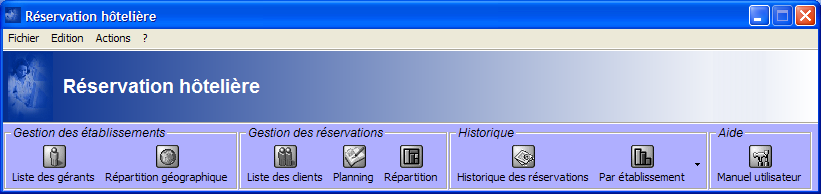

|
Réservation hotelière
|
|
|
Manuel Utilisateur
|

-
Gestion des établissements / Liste des gérants :
cette liste permet de visualiser des informations de différentes classes applicatives en utilisant les relations existant entre ces classes. Elle permet aussi de visualiser des champs de type image dans une liste.
-
Gestion des établissements / Répartition géographique :
cette vue composée permet de visualiser dans la même fenêtre plusieurs vues simples (un arbre, une carte et une liste). Le contenu de chaque vue simple est défini en fonction de la sélection de sa vue "parente". La carte autorise différentes manipulations : zoom (shift + souris), translation (shift + alt + souris) et déplacement d'objets (alt + souris). La liste du bas permet d'afficher ou de masquer les chambres d'un établissement donné à l'aide des flèches situées à l'extrémité de chaque ligne.
-
Gestion des réservations / Liste des clients :
cette vue permet de modifier les données présentées dans la table éditable de gauche mais aussi de les visualiser dans le formulaire de consultation de droite. Les cellules de la liste contenant une croix verte peuvent être éditées par simple clic. Les liens hypertextes situés sous la liste permettent de naviguer rapidement dans cette liste.
-
Gestion des réservations / Planning des réservations :
cette vue de type 'planning de Gantt' permet de visualiser les données en fonction de champs de type date (généralement une date de début et une date de fin). Il est possible de modifier l'échelle du planning en déplaçant la souris sur la grille du planning. La liste présente sous le planning est contextuelle à ce dernier.
-
Gestion des réservations / Répartition :
cette vue de type 'carte arborescente' permet de visualiser d'un seul coup d'oeil plusieurs informations d'une même classe applicative (ici des réservations). La taille des rectangles représente la valeur d'un champ (ici le montant d'une réservation) et la couleur représente la valeur d'un autre champ (ici le montant journalier). Ce composant offre donc une vue synthétique de tous les objets d'une classe applicative. Le formulaire de droite permet de paramétrer finement la carte arborescente de gauche.
-
Historique / Réservations :
cette vue présente un filtre et une liste contenant de nombreux éléments. Le filtre permet de limiter le nombre d'éléments présents dans la liste et ainsi de pouvoir retrouver plus facilement un ou plusieurs éléments. Une fois un filtre créé, il est possible de lui ajouter de nouveaux critères de filtrage ou bien de le réinitialiser.
-
Historique / Statistiques